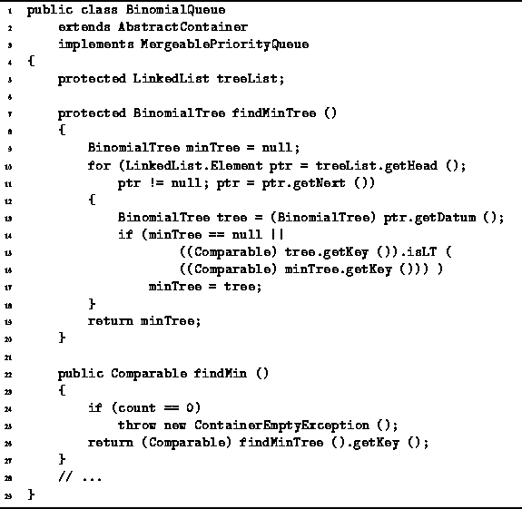

Data Structures and Algorithms
with Object-Oriented Design Patterns in Java
Data Structures and Algorithms
with Object-Oriented Design Patterns in Java
A binomial queue that contains n items consists of
at most  binomial trees.
Each of these binomial trees is heap ordered.
In particular, the smallest key in each binomial tree
is at the root of that tree.
So, we know that the smallest key in the queue
is found at the root of one of the binomial trees,
but we do not know which tree it is.
binomial trees.
Each of these binomial trees is heap ordered.
In particular, the smallest key in each binomial tree
is at the root of that tree.
So, we know that the smallest key in the queue
is found at the root of one of the binomial trees,
but we do not know which tree it is.
The findMinTree method is used to determine
which of the binomial trees in the queue has the smallest root.
As shown in Program  ,
the findMinTree simply traverses the entire linked list
to find the tree with the smallest key at its root.
Since there are at most
,
the findMinTree simply traverses the entire linked list
to find the tree with the smallest key at its root.
Since there are at most  binomial trees,
the worst-case running time of findMinTree is
binomial trees,
the worst-case running time of findMinTree is

Program: BinomialQueue class findMinTree and findMin methods.
Program also defines the findMin method
which returns the smallest key in the priority queue.
The findMin method uses findMinTree to locate the
tree with the smallest key at its root
and returns that key.
Clearly, the asymptotic running time of findMin is the same
as that of findMinTree.
 Copyright © 1998 by Bruno R. Preiss, P.Eng. All rights reserved.
Copyright © 1998 by Bruno R. Preiss, P.Eng. All rights reserved.